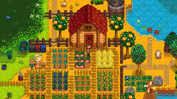
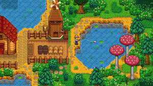
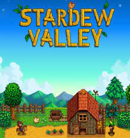
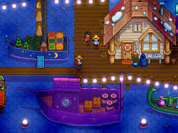

Stardew Valley is open-ended, allowing players to grow crops, raise livestock, fish, cook, mine, forage, and socialize with the townspeople, including the ability to marry and have children.
Indie
Computerrollenspel
Avonturenspel
Rating: 8.8
Singleplayer/Multiplayer
Genre: farm life sim
Ontwikkelaar: Eric Barone
Uitgeefdatum: 26 februari 2016




Systeemeisen
Besturingsysteem: Windows Vista or greater
Processor: 2 Ghz
Geheugen: 2 GB RAM
Grafische kaart: 256 mb video memory, shader model 3.0+